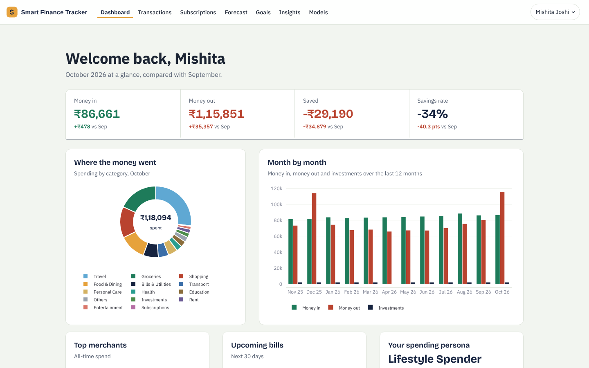
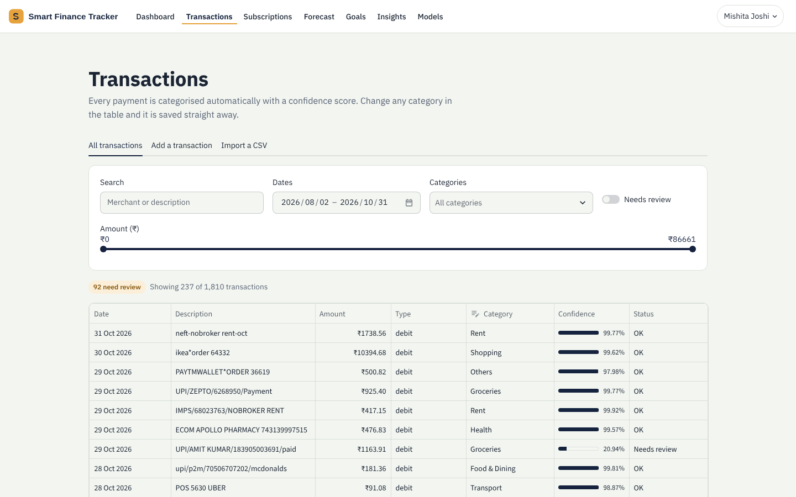
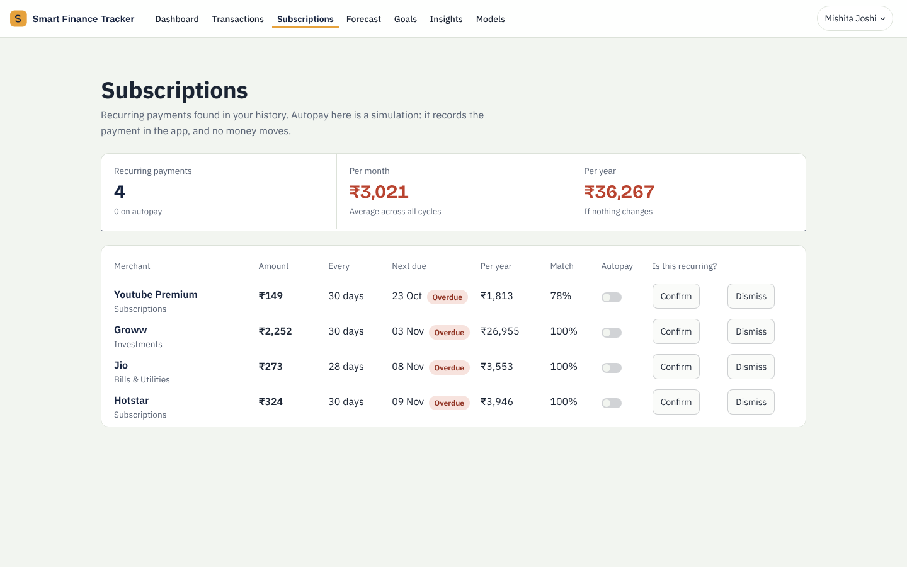
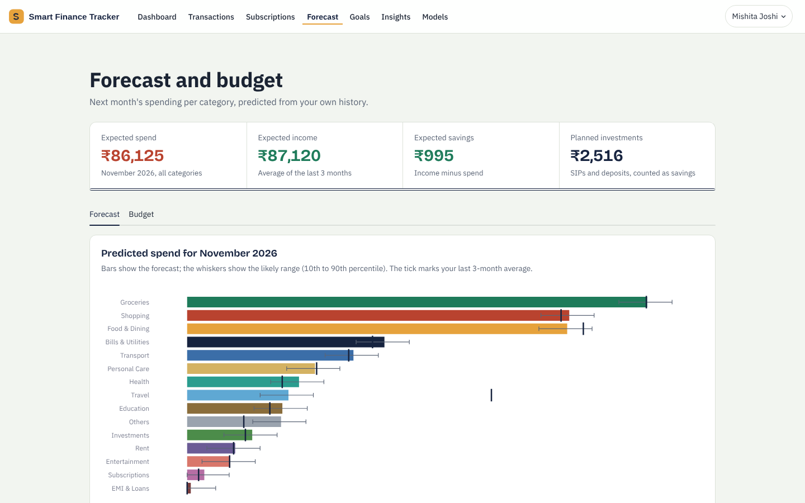
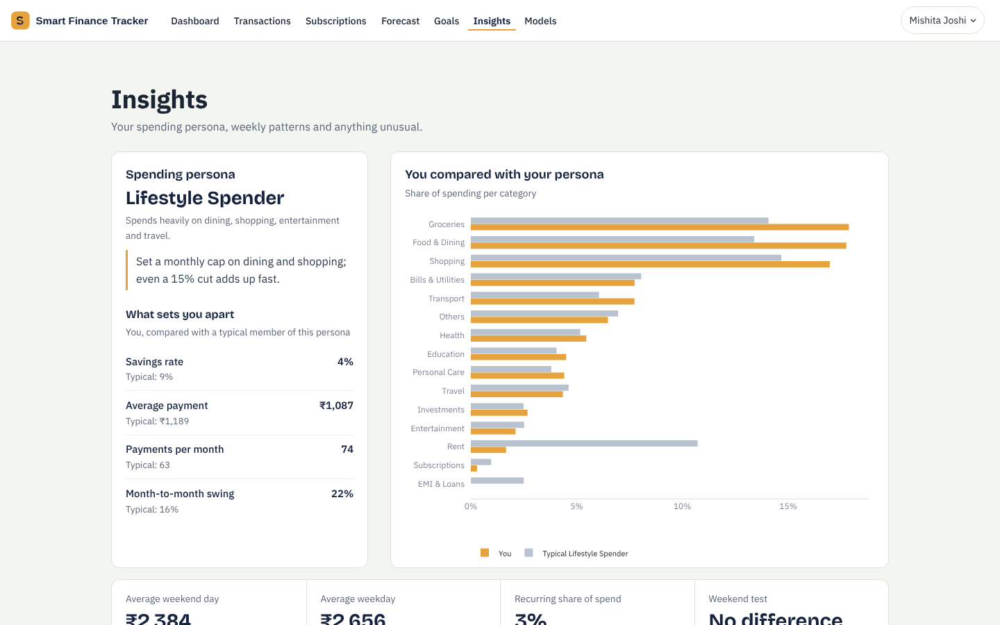

Smart Finance Tracker reads UPI, NEFT and card narrations, files every payment under the right category, spots your subscriptions and forecasts next month's spending from your own history.

A text model trained on Indian merchant names and narration formats labels each payment and tells you how sure it is.
Recurring payments are detected from timing and amount patterns, with next due dates and yearly cost.
Spending per category is predicted with a likely range, then turned into a budget that funds your goals.
Import a bank-statement CSV or add payments one by one. Each gets a category and a confidence score, and you can change any category straight in the table.

Netflix, SIPs, prepaid recharges and broadband show up on their own, with what they cost you per year. Confirm or dismiss each one.

Next month's spend for each category, with the range it will probably land in. Essentials get a buffer; discretionary spending is trimmed only when your goals need it.

Clustering places you in a spending persona and shows exactly where you differ from it, alongside weekday patterns, fast-growing categories and unusual payments.

Every figure comes from one held-out test run. The models are trained on synthetic multi-user histories calibrated with official and public data, so these numbers describe that data, not real-world performance. The new-merchant score is the honest expectation for unfamiliar payees.
Four to eleven models per task against a baseline, with SMOTE, class weights and no reweighting tested for the imbalanced classifiers.
One pipeline per model, time-based splits for forecasting, user-grouped splits elsewhere, and a test set used once.
Every run logged to MLflow, models saved as versioned files with a registry, and the whole app shipped with Docker.
Urban household spending shares set the category mix of every generated user.
250,000 payments set realistic ticket sizes per category and showed there is no weekend effect.
Real merchant names, extra training rows and an external test set, with half its new merchants held out.
Multi-month histories for forecasting, subscriptions and personas, which no public dataset provides.
Clone the repository, train the four models once, and open the app. Create an account, then load the demo history to see every page filled in.
Get the code on GitHub# Python 3.12+, inside a virtual environment
git clone https://github.com/joshi-mishita/finance-tracker
cd finance-tracker
python3 -m venv .venv && source .venv/bin/activate
pip install -r requirements.txt
python -m src.data_prep
python -m src.train
python -m streamlit run app.py